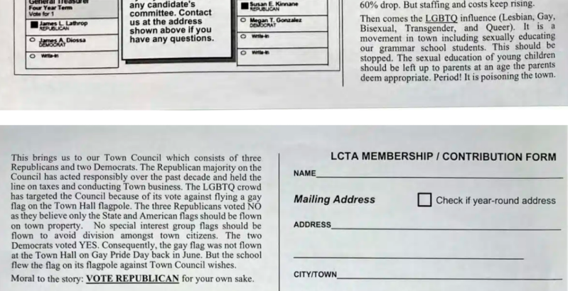
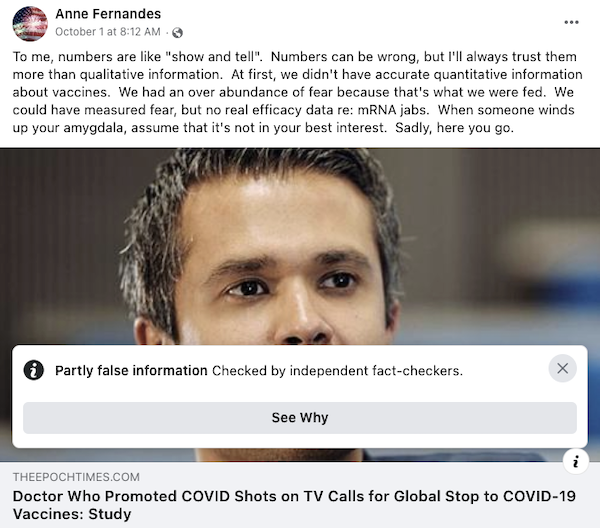
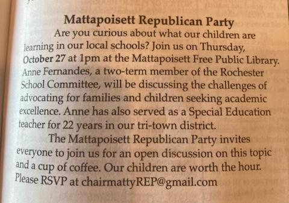
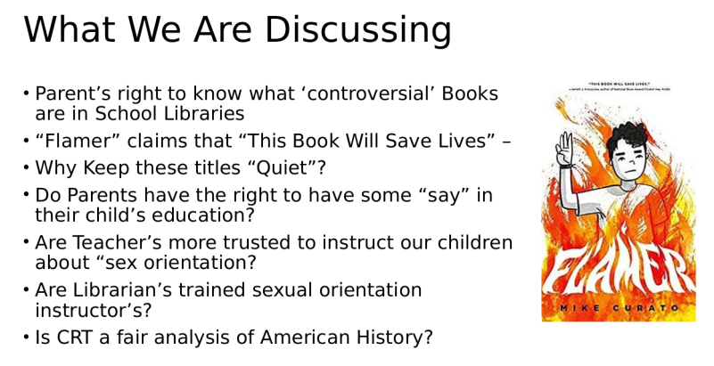

2022-11-09 08:00
It was just a matter of time before religious zealots and culture warriors came for the books in SouthCoast school libraries.
Last Spring Dartmouth had a MAGA school committee candidate who wanted to ban books. Recently, Fall River, Tri-Town (Rochester, Marion, Mattapoisett) and Little Compton, Rhode Island, all had run-ins with religious extremists, most of them sponsored by local Republican town committees.
PEN America, an association that fights for freedom of expression for writers, issued a timely report titled “Banned In the USA: The Growing Movement to Censor Books in Schools.” PEN has identified over 50 groups involved in censorship campaigns – a number of them listed as hate groups, including MassResistance – a bunch of haters from Waltham, Massachusetts.
In Fall River, a group called the American Society for the Defense of Tradition, Family, and Property launched a “Rosary Rally” in Fall River:
On October 24th the “TFP” brought its “Rosary Rally” from Crazytown to Fall River. The group has a long list of policies and people they hate, thinks its antics constitute “spiritual warfare” and defends colonialism and forced conversion based on the “Right of Conquest.” The Southern Poverty Law Center has been watching this group of crackpots for a while and had this to say about them:
“Maybe the weirdest bunch in were from the American Society for Tradition, Family and Property (TFP), a self-described Catholic organization whose representatives seemed to be wearing red cloaks. The TFP table had a particularly noxious pamphlet – ‘10 Reasons Why Homosexual ‘Marriage’ is Harmful and Must be Opposed’ – that argued that same-sex marriage ‘ignores a child’s best interests’ and that it ‘turns a moral wrong into a Civil Right.’ The pamphlet blamed same-sex marriage for forcing Christians to ‘betray their consciences by condoning … an attack on the natural order.’ Another TFP pamphlet warned hysterically about the dangers of ‘socialism,’ which, for some unknown reason, given our hyper-capitalist economy, they seem to think is on the march and targeting ‘traditional marriage’ and ‘parental rights.’”
In Little Compton, Rhode Island, the Little Compton Taxpayer’s Association, essentially a proxy for the GOP, sent out a homophobic, Q-Anon inspired campaign mailer asking recipients to vote a straight Republican (what else?) ticket.

In the Tri-Town area at least two School Committee members are Christian nationalist MAGA supporters flogging “anti-CRT” nonsense and shouting at maximum volume, “They’re indoctrinating our children!”
Old Rochester school committee member Joe Pires and Rochester school committee member Anne Fernandes are also anti-vaxxers, anti-maskers, anti-CRT, anti-gay, and (of course) anti-diversity. Posts from both deny that racism exists anywhere than in the hearts of nasty people. Apparently, the moment that Abraham Lincoln liberated slaves, all of America’s race problems simply disappeared magically.
Both of these idiots are up for re-election next year.
Recently, Pires condemned LGBTQ+ books at ORR as “pornographic.” From one side of his mouth Pires claimed to oppose banning books. But from the other he was still calling for, well, banning books:
Pires reposted a Hillsdale College livestream. As Kathryn Joyce pointed out in Salon magazine, Hillsdale is the sharp end of the assault on public schools by Christian Nationalists.
In coordinating his attack on district school libraries, Pires managed to violate Open Meeting laws by coordinating the attack with fellow committee member Anne Fernandes, a kindred spirit, on a Facebook group Pires founded called “Tri-Town Buzz.”
I located three of Pires’ Facebook accounts (this and this and this) and two of Fernandes’ (this and this). Fernandes seems to spend a fair amount of her time promoting an Evangelical church as well as many of the groups that PEN identifies as censorship organizations.
Pires is bad enough, but Fernandes is a real piece of work. In addition to her hate-filled posts about gay children and parents, Fernandes ignorantly dispenses conspiracy theories and just plain bad science. There are numerous examples of Facebook flagging her posts with the polite equivalent of “BS!”

Fernandes is just the sort of creature that Republicans love, which is why the Mattapoisett Republicans sponsored her talk at the local library:

At that October 27th presentation organized by the Mattapoisett Republicans, Fernandes worked from PowerPoint slides, claiming that librarians are indoctrinating children with “CRT” instead of history and passing themselves off as sex education teachers (she’s confusing them with teachers). And for an “expert” with 22 years of teaching, Fernandes seems completely clueless that LGBTQ+ kids are at risk and that books that represent them help.

For all her swearing up and down that she doesn’t believe in book banning — here are the books Fernandes wants to ban:
Efforts like Fernandes’ are part of a wider Republican campaign to gut public schools. In Arizona, gubernatorial candidate Kari Lake (who is trailing Katie Hobbs with 79% of the vote counted) promised to scale back education on science, math, and history. North Carolina’s Christian Nationalist Lt. Governor, Mark Robinson, wants to ban science and history outright in elementary schools.
If science shines light on contagion and vaccination, and history sheds light on social ills that still plague us, it’s pretty clear what Christian Nationalists think of both. State legislation, especially in the South, has literally made it a crime to speak of sexual identity or racism in schools.
Moms for Liberty, one of the most vocal and fast-growing groups of Christian Nationalists attacking school districts, has teamed up with so-called “Constitutional Sheriffs” to investigate alleged “indoctrination” of children in the schools. The Claremont Institute, a MAGA think tank, is now offering Sheriff’s Fellowships to facilitate more muscular takeovers or compliance of school boards.
The right-wing American Legislative Exchange Council (ALEC), known for its dangerous legislation, is now targeting local school races. Its spin-off, the American City and County Exchange (ACCE), is now coordinating efforts with the GOP, Moms for Liberty, the Heritage Foundation, the DeVos family, and others to recruit and run candidates to take over local school boards.
The next right-wing school committee candidate your local Republican town committee sponsors will be amply funded and likely supported by not only locals but ACCE.
One group fighting back is Tri-Town Against Racism. In response to the attempted book bans at ORR, TTAR circulated a petition which described the harms to children:
“Attempts to ban books highlighting underrepresented kids sends them the message: You shouldn’t exist; your story doesn’t matter and we don’t want our kids to empathize with you. This is a dangerous message which can result in grave consequences, like depression, self-harm and suicidal ideation. No child should feel like they are unworthy and undeserving of love and respect.”
The petition received tremendous support in the community, was signed by 631 people, and was presented to the superintendent — who apparently listened.
In a powerful letter to the New Bedford Light, Mattapoisett resident Nicole Demakis explained in more detail why access to books that conservatives find offensive is critically important to LGBTQIA kids:
“I believe it is imperative that we allow kids to have access to literature in our schools which represents a broad spectrum of experiences for those who may be struggling with identity, whether that be children of color, gay, straight, bi, asexual or transgender. It may be an uncomfortable truth for those who don’t understand other’s experiences growing up facing prejudice, confused about their feelings, being bullied, made fun of or excluded because that child does not understand who they are. Not to be cliché, but no one knows another’s reality until you’ve walked a mile in their shoes; and to discount that reality further by stigmatizing literature that may speak to them, but not you, is wrong. As an example of this, studies show that LGBTQIA youth are not inherently prone to suicide risk because of their sexual orientation or gender identity. Rather, they are placed at a higher risk because of how they are mistreated and stigmatized in society.”
To raise the level of public debate on this issue, TTAR is holding the third of a series of Community Conversations on November 14th. You can sign up here.
In Fall River, United Against Hate is holding a similar Community Conversation About the Recent Rise in the South Coast of Book Banning, Drag Queen Story Time Protests And Hate Speech on November 16th. Contact United Neighbors of Fall River for a Zoom link.
In Rhode Island, Love Wins Coastal responded to the LCTA’s homophobic mailing with a rally in the Town Commons. One Democratic Rhode Island legislator, on her own initiative, joined in solidarity.
As much as I hate to say it, all these efforts by kind and caring people, including exemplary legislators acting independently, are still not enough. They are no match for the think tanks, the laboratories of repressive legislation, the rapidly spreading extremism, and the Republican Party itself.
Equality, diversity, education, race, history, libraries, free speech, and respect and acknowledgement of differences. These are today’s battlefields for Republicans.
It’s high time that local Democrats started fighting alongside the brave and lonely defenders who have been waging the Democratic Party’s battles for them.